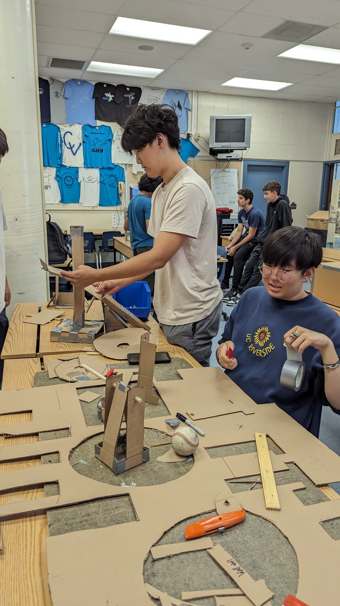
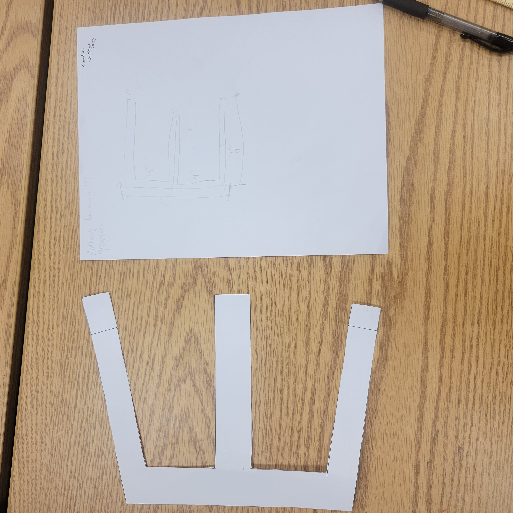

8/20/23 - This is my first journal entry!
8/25/23 - This week was eventful. I did a ton of homework alongside studying for AP Environmental Science. This week, I learned about the Engineering process alongside Binary, Hex Code, and Base 10 translations. Safety was also something I learned and how it is essential to this class. The challenge on Thursday involved PVC pipes and working as a team to move a marble from one place to another. My team managed to score while the other team failed every attempt. This weekend I am going to be studying for my classes alongside completing labs for AP Comp Sci.
9/1/23 - During the last week of August of 2023, I learned about the engineering processes alongside safety processes. To be more specific, we learned about mechanical engineering and how it entails mathematical
and physics principles with the addition of simple machines. We also started designing Rube Goldberg Machine on Wednesday in our groups with Justin, Ian, and I being part of a team. Our class also held a household
appliances contest in which Mr. Poole gave the two winners two Kit Kats.

9/8/23 - This week, everything was just mediocre. Every class went by relatively fast but still felt slow at the same time. I learned about mathematical processes in AP Comp Sci and how to construct and declare those with integers and doubles.
Our Rube Goldberg will first send down a ball into a pullee system and that pullee system will bring a car up to a platform to be sent down into a lever with a needle on it to poke the balloon into oblivion. All our machines in the machine
are screw, incline plane, pullee, wheel and axle, and a lever.
I think the most challenging part of the machine will be the structural integrety of the cardboard structures as the baseball is relatively heay.

9/18/23 - This week, my team, Ian and Justin, and I, created a Rube Goldberg machine. It consisted of a screw, incline plane, and a lever. However, the design was last minute as we intended for the machine to have a car for wheel and axle and a pullee
system inbetween the incline plane and the lever. However, in the end, it had worked out with our team being the first to finish the competition. Unfortunately, I highly doubt we will be the winners lol.


9/22/23 - During this week, our classroom's internet was down which meant we worked on challenges all week. However, we had fun challenges. The first one being a paper floatation device. We had one paper sheet and had to carry as much weight as possible
while being on water for 5 minutes. Our second challenge was drawing a E with whatever dimensions we want under 3 feet. I made a small 6in height by 3 1/2in length E. I acquired someone elses 8in by 10in..? E.
